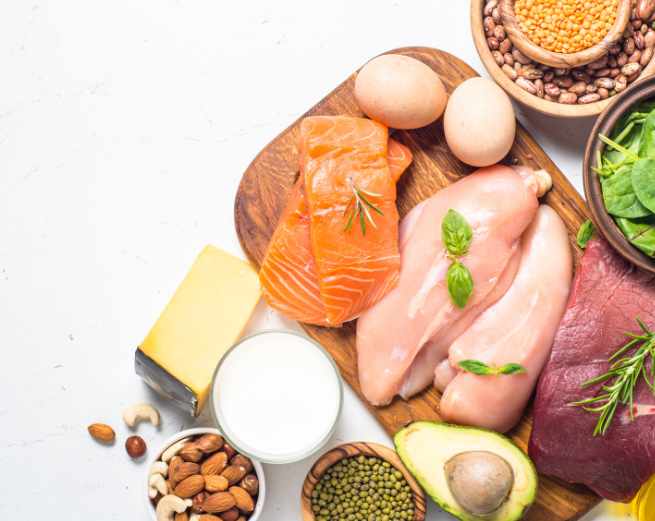

PROTEÍNAS SAUDÁVEIS

Proteínas saudáveis são aquelas provenientes de fontes nutritivas e equilibradas, que fornecem todos os aminoácidos essenciais que o corpo precisa. Ao escolher proteínas saudáveis, você garante que está consumindo nutrientes de alta qualidade, com baixo teor de gordura saturada e sem aditivos prejudiciais.
Leguminosas (feijão, lentilha), grãos integrais (quinoa, aveia), tofu e tempeh.
Peixes, frango sem pele e cortes magros de carne bovina.
Uma excelente fonte de proteína de alta qualidade.
Amêndoas, nozes, chia e linhaça.
Incorporar proteínas saudáveis à sua alimentação traz uma série de benefícios para a saúde, desde o aumento da energia até a melhoria do desempenho físico e mental.
Essenciais para quem pratica atividades físicas.
Proteínas promovem saciedade e ajudam no controle de peso.
Proteínas ajudam na produção de anticorpos e células de defesa.
Colágeno e elastina dependem de proteínas para manter a firmeza e elasticidade.

voltar para a página onde você pode encontrar outras variedades com relação a almentação saúdavel e seus nutrientes mais inmportantes. Clique no link abaixo e seja direcionado a essa página:

volte para o inicio de toda a página e procure o tema que mais lhe interessa, temos uma quantidade vasta, com temas variados relacionados a saúde e bem-estar. Clique no link abaixo e seja direcionado a essa página:
siga adiante com a próxima página e veja o tema que lhe aguarda relacionado a saúde e bem-estar, mais especificamente, com relação a alimentação. Clique no link abaixo e seja direcionado a essa página: